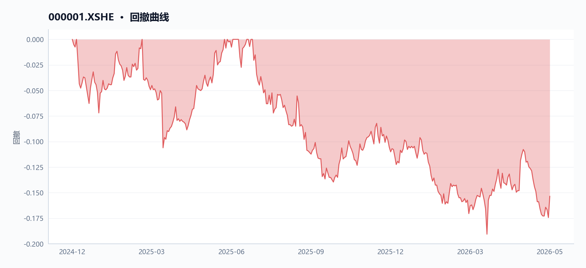
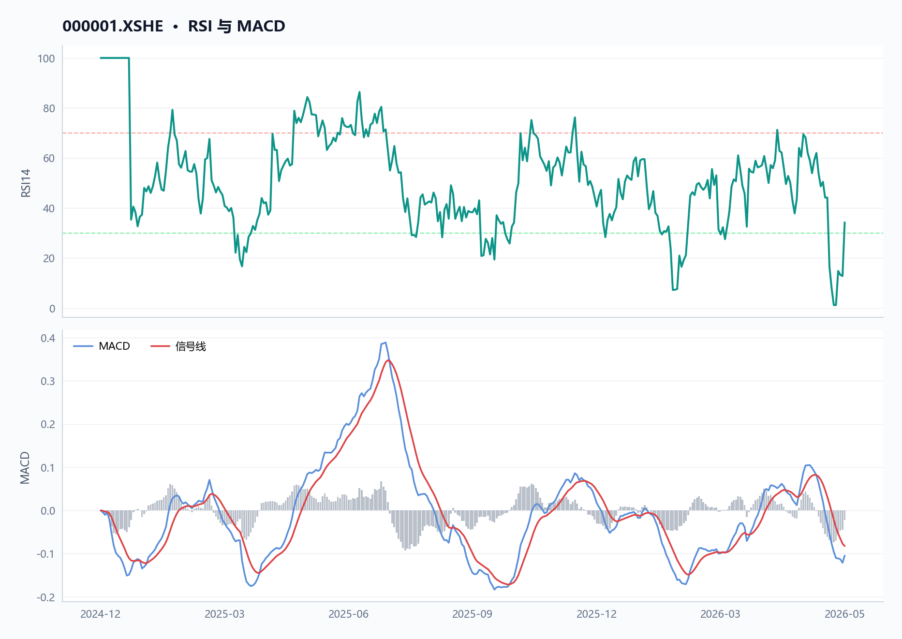
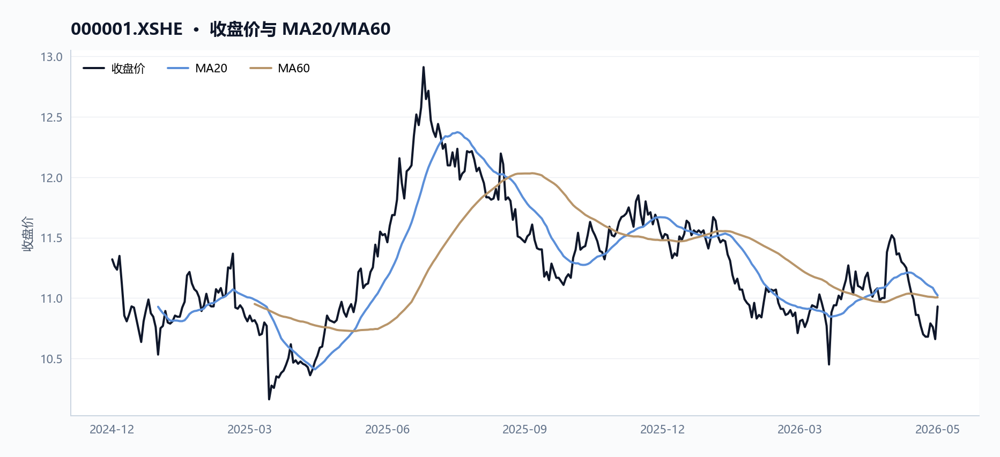
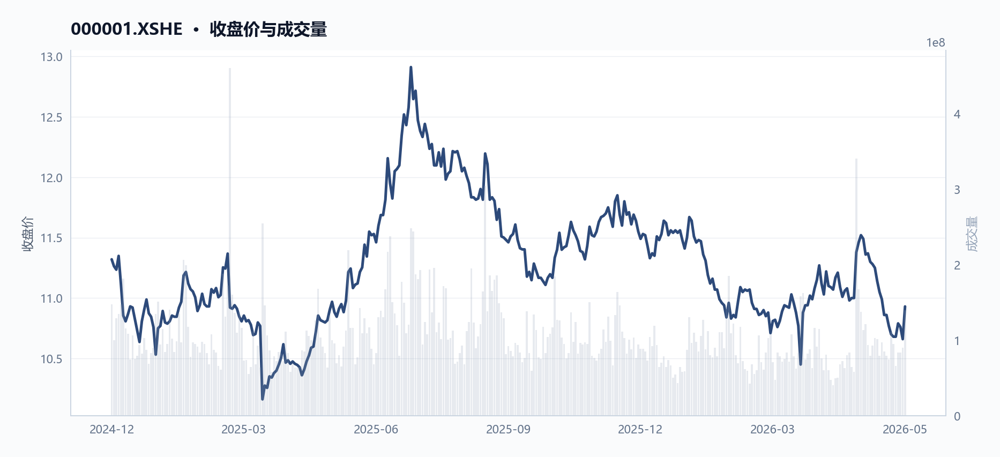
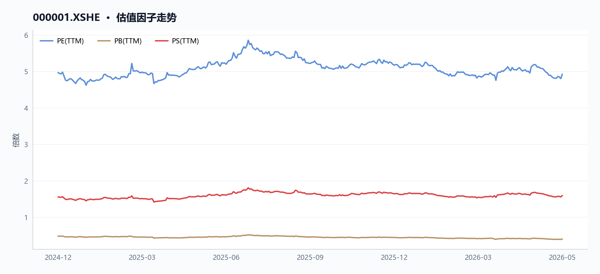
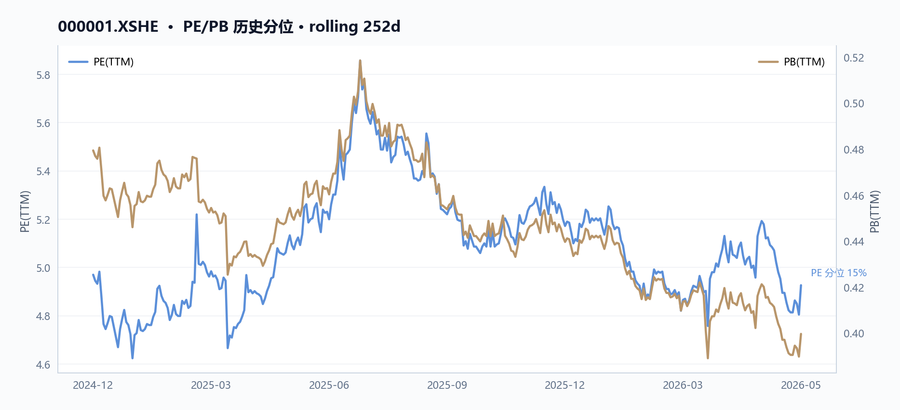
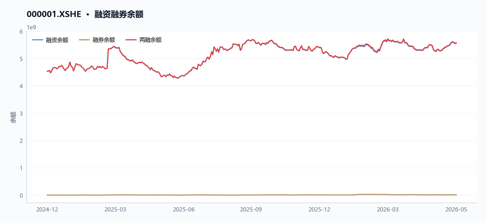
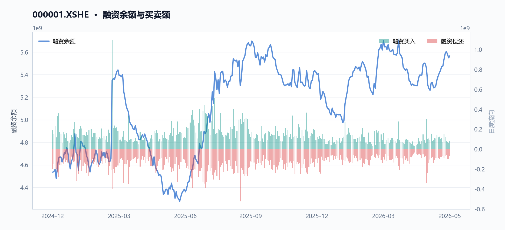
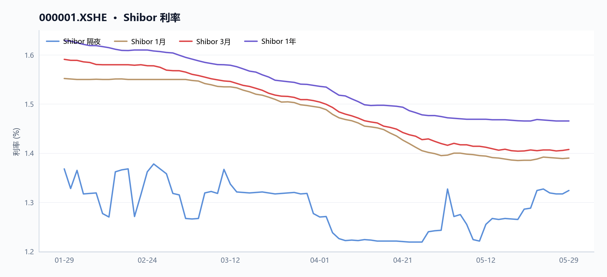
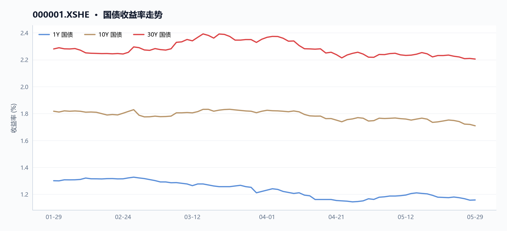

000001 平安银行 多智能体研究报告
执行摘要
平安银行当前估值处于历史低位，市盈率仅4.93倍、市净率0.40倍，但股价短期承压，近20日下跌5.12%，RSI为34.23，接近超卖区域。同时，公司营收连续下滑，2025年营业收入1314.42亿元，同比下降10.4%，净利润426.33亿元，同比减少4.2%。两融余额约55.8亿元，显示杠杆资金参与度较高。
核心指标速览
| 指标 | 数值 |
|---|---|
| 中信一级行业 | 40 |
| 最新收盘价 | 10.93 |
| MA20 | 11.022 |
| MA60 | 11.0057 |
| 20 日收益率 | -5.12% |
| 60 日收益率 | 0.46% |
| RSI14 | 34.2342 |
| 20 日均量 | 9659.98 万 |
| PE(TTM) | 4.9258 |
| PB(TTM) | 0.3996 |
| PS(TTM) | 1.5947 |
| 股息率(TTM) | 5.47% |
| 总市值 | 2121.07 亿 |
| 融资余额 | 55.67 亿 |
| 融资买入额 | 8245.34 万 |
量价与技术面
核心结论
截至2026年5月29日，平安银行收盘价10.93元，20日跌幅-5.12%，RSI 34.23处于弱势区间，但近5日量价齐升，短期有止跌反弹迹象。
图 · 回撤曲线

回撤经历加深后有所修复。
图 · RSI 与 MACD

RSI 位于弱势区间；MACD 位于信号线下方，动能偏弱。
表 · 技术指标快照
| 指标 | 数值 |
|---|---|
| 最新收盘价 | 10.93 |
| MA20 | 11.022 |
| MA60 | 11.0057 |
| 20 日收益率 | -5.12% |
| 60 日收益率 | 0.46% |
| RSI14 | 34.2342 |
| 20 日均量 | 9659.98 万 |
趋势概览
图 · 收盘价与 MA20/MA60

价格与均线缠绕，方向尚不明朗。
截至2026年5月29日，平安银行（000001.XSHE）收盘价10.93元，低于20日均线（11.022元）和60日均线（11.006元），短期与中期均线呈空头排列。20日收益率为-5.12%，60日收益率仅为+0.46%，显示近一个月股价显著走弱。14日RSI为34.23，处于30-50的弱势区间，但尚未进入超卖区域。
| 指标 | 数值 | 日期 |
|---|---|---|
| 最新收盘价 | 10.93元 | 2026-05-29 |
| MA20 | 11.022元 | 2026-05-29 |
| MA60 | 11.006元 | 2026-05-29 |
| 20日收益率 | -5.12% | 2026-04-29至2026-05-29 |
| 60日收益率 | +0.46% | 2026-03-02至2026-05-29 |
| RSI14 | 34.23 | 2026-05-29 |
近期异动
近5个交易日（2026-05-25至2026-05-29），股价从10.68元上涨至10.93元，涨幅+2.34%，成交量从6631万股放大至1.40亿股，增幅+111.03%，呈现明显的放量上涨。其中，2026-05-29单日涨幅+2.53%（从10.66元升至10.93元），成交量1.40亿股，显著高于20日均量（9659.98万股），为近期最大单日涨幅与成交量。
| 交易日期 | 收盘价 | 涨跌幅 | 成交量 | 较20日均量变化 |
|---|---|---|---|---|
| 2026-05-25 | 10.68元 | - | 6631万股 | -31.4% |
| 2026-05-26 | 10.79元 | +1.03% | 8373万股 | -13.3% |
| 2026-05-27 | 10.76元 | -0.28% | 8397万股 | -13.1% |
| 2026-05-28 | 10.66元 | -0.93% | 9007万股 | -6.8% |
| 2026-05-29 | 10.93元 | +2.53% | 1.40亿股 | +44.8% |
量价关系
图 · 收盘价与成交量

价格先扬后抑，成交量整体下行。
- 放量下跌：2026-05-21，股价下跌0.65%至10.70元，成交量1.11亿股，高于20日均量，显示下跌过程中抛压较重。
- 缩量盘整：2026-05-25至2026-05-28，股价在10.66-10.79元区间窄幅波动，成交量持续低于20日均量，市场观望情绪浓厚。
- 放量反弹：2026-05-29，股价放量上涨+2.53%，成交量1.40亿股，较20日均量放大44.8%，突破前期盘整区间，短期多头力量增强。
区间极值
- 区间最高价：2025-07-10，盘中最高13.06元，收盘12.91元，成交量2.48亿股。
- 区间最低价：2025-04-07，盘中最低9.95元，收盘10.16元，成交量2.55亿股。
融资融券
融资余额从2024-12-25的45.35亿元增至2026-05-28的55.67亿元，增幅+22.76%，期间融资买入峰值出现在2025-03-17（10.93亿元），显示杠杆资金持续介入。
数据局限
- 未提供60日RSI、布林带、MACD等技术指标数据。
- 未提供行业或板块相对强弱数据（如相对大盘收益率）。
- 未提供机构持仓变化或大宗交易数据。
基本面与估值
核心结论
截至2026年5月29日，平安银行PE(TTM)仅4.93倍、PB(TTM)仅0.40倍，但营收与归母净利润已连续两年下滑，估值处于历史低位反映盈利持续承压。
盈利与成长
表 · 最新盈利质量因子
| 指标 | 最新值 |
|---|---|
| 净利率(TTM) | 32.37% |
平安银行（000001.XSHE）近年营收与归母净利润持续下滑，成长性承压。根据年报数据，2023至2025年营收从1,646.99亿元降至1,314.42亿元，归母净利润从464.55亿元降至426.33亿元。2025年营收同比-10.4%，归母净利润同比-4.2%，MD&A解释为“受贷款利率下行和业务结构调整等因素影响，净息差1.78%，同比2024年下降9个基点”。TTM因子显示，截至2026年5月29日，归母净利润增速为-1.4%，营业利润增速为-3.1%，盈利下滑趋势延续。
| 年份 | 营收（亿元） | 营收同比 | 归母净利润（亿元） | 归母净利润同比 | 营业利润（亿元） |
|---|---|---|---|---|---|
| 2023 | 1,646.99 | - | 464.55 | - | 579.28 |
| 2024 | 1,466.95 | -10.9% | 445.08 | -4.2% | 552.06 |
| 2025 | 1,314.42 | -10.4% | 426.33 | -4.2% | 514.08 |
数据来源：pit_financials_table
图表解读：若将PE(TTM)与归母净利润增速绘制双轴折线图（图1），可直观看到：2024年12月25日PE(TTM)为4.97倍、利润增速-4.0%；2026年5月29日PE(TTM)降至4.93倍、利润增速收窄至-1.4%。PE与利润增速同步下行，反映市场对盈利前景的悲观预期尚未扭转。
现金流与勾稽
利润现金转化质量良好，但经营现金流波动较大。2025年经营现金流净额达3,158.58亿元，同比大增398.7%，MD&A指出“主要是向中央银行借款净现金流入增加”。净现比（经营现金流/归母净利润）从2023年的1.99升至2025年的7.41，远高于1，表明利润现金含量高。然而，2024年经营现金流曾降至633.36亿元，波动显著。
| 年份 | 经营现金流（亿元） | 归母净利润（亿元） | 净现比 |
|---|---|---|---|
| 2023 | 924.61 | 464.55 | 1.99 |
| 2024 | 633.36 | 445.08 | 1.42 |
| 2025 | 3,158.58 | 426.33 | 7.41 |
数据来源：annual_report_context
图表解读：图2展示经营现金流与归母净利润的对比柱状图，2025年经营现金流柱形显著高于前两年，与MD&A中“向中央银行借款净现金流入增加”的表述一致，说明该增长并非来自主营业务改善，而是融资性现金流驱动。
估值水平
图 · 估值因子走势

各曲线走势分化，需结合分项观察。
图 · PE/PB 历史分位

估值处于历史低位，股息率提供一定安全垫。截至2026年5月29日，PE(TTM)为4.93倍，PB(TTM)为0.40倍，PS(TTM)为1.59倍，均较2024年12月25日有所下降。股息率TTM为5.47%，高于2024年12月的8.10%（因当时股价较低），反映分红回报相对稳定。资产负债率仍高达90.98%，杠杆压力较大。
表 · 最新偿债与流动性
| 指标 | 最新值 |
|---|---|
| 资产负债率 | 90.98% |
| 指标 | 2024-12-25 | 2026-05-29 | 变动方向 |
|---|---|---|---|
| PE(TTM) | 4.97 | 4.93 | 微降 |
| PB(TTM) | 0.48 | 0.40 | 下降 |
| PS(TTM) | 1.56 | 1.59 | 微升 |
| 股息率TTM | 8.10% | 5.47% | 下降 |
| 资产负债率 | 91.46% | 90.98% | 微降 |
数据来源：factor_trend
图表解读：图3为PE(TTM)与PB(TTM)的双轴折线图，两条曲线均呈下行趋势，PB(TTM)从0.48倍降至0.40倍，降幅（-16.7%）大于PE(TTM)的降幅（-0.8%），说明市场对净资产价值的折价程度加深。
- 数据局限：未提供ROE、扣非净利润等详细年报数据，无法计算完整杜邦分析；无行业可比公司估值对比数据，无法判断平安银行（000001.XSHE）在银行行业中的相对估值水平。
资金与交易结构
核心结论
截至2026-05-29，平安银行近20日日均成交额约10.6亿元，融资余额55.67亿元，股价较20日均线折价0.83%，短期资金参与度回升但整体动能偏弱。
图 · 融资融券余额

融资余额曲线先抑后扬。
表 · 两融区间变动
| 指标 | 数值 |
|---|---|
| 区间起始 | 2024-12-25 |
| 区间结束 | 2026-05-28 |
| 融资余额（期初） | 45.35 亿 |
| 融资余额（期末） | 55.67 亿 |
| 融资余额变动 | 10.32 亿 |
| 变动幅度 | 22.75% |
| 融券余额（期初） | 0.06 亿 |
| 融券余额（期末） | 0.14 亿 |
| 融资买入峰值 | 10.93 亿（2025-03-17） |
成交与活跃度
表 · 成交活跃度
| 指标 | 数值 |
|---|---|
| 20 日均量 | 9659.98 万 |
| 近12日日均成交额 | 9.81 亿 |
| 近12日最高成交额 | 15.16 亿（2026-05-29） |
| 近12日最低成交额 | 7.10 亿（2026-05-25） |
| 近12日换手率区间 | 34.17% ~ 72.11% |
| 主力资金流向 | 数据缺失 |
区间内（2024-12-25至2026-05-29），平安银行（000001.XSHE）股价于2025-07-10触及区间最高价13.06元（当日成交额约32.49亿元），于2025-04-07触及区间最低价9.95元（当日成交额约27.51亿元）。截至2026-05-29，最新收盘价10.93元，较20日均线（11.02元）折价约0.83%，较60日均线（11.01元）折价约0.69%，RSI（14日）为34.23，处于偏弱区域。
近5个交易日（2026-05-25至2026-05-29），股价上涨2.34%，成交额从7.10亿元增至15.16亿元，增幅达113.59%，显示短期资金参与度明显提升。近20日（2026-04-29至2026-05-29），股价下跌5.12%，成交额仅微增1.52%，表明中期交投活跃度改善有限。
| 时间窗口 | 起始日 | 结束日 | 收盘价变化 | 成交额变化 |
|---|---|---|---|---|
| 近5日 | 2026-05-25 | 2026-05-29 | +2.34% | +113.59% |
| 近20日 | 2026-04-29 | 2026-05-29 | -5.12% | +1.52% |
- 数据局限：JSON未提供区间内每日成交额明细，仅依赖近5日与近20日窗口数据，无法评估更长时间维度的成交活跃度趋势。
融资融券
图 · 融资余额与买卖额

表 · 融资融券快照
| 指标 | 数值 |
|---|---|
| 统计日期 | 2026-05-28 |
| 融资余额 | 55.67 亿 |
| 融券余额 | 0.14 亿 |
| 融资买入额 | 0.82 亿 |
| 融资偿还额 | 0.65 亿 |
| 融券余量 | 135.11 万 |
| 两融余额合计 | 55.81 亿 |
融资余额从区间起始日（2024-12-25）的45.35亿元增至2026-05-28的55.67亿元，增幅22.75%。区间内融资买入峰值出现在2025-03-17，当日融资买入额达10.93亿元，显示杠杆资金在该时点有较强的买入意愿。融券余额数据缺失，无法分析融券端变化。
- 数据局限：JSON未提供融券余额数据，无法评估融券端对股价的影响；融资余额仅提供起止日与峰值日数据，缺乏区间内每日变动序列，无法判断融资资金进出的持续性。
股东与股本
表 · 股本结构快照
| 项目 | 数值 |
|---|---|
| 统计日期 | 2026-05-29 |
| 总股本 | 194.06 亿 |
| 流通 A 股 | 194.06 亿 |
| 自由流通股本 | 81.60 亿 |
| 自由流通占比 | 42.1% |
| 非自由流通占比 | 57.9% |
- 数据局限：JSON未提供股东户数、前十大股东持股比例、机构持仓变动或股本结构（如流通股、限售股）等信息，无法分析股东层面的资金流向与筹码分布变化。
分红与资金成本
截至2026-05-29，平安银行TTM股息率为5.47%。结合2025年资产负债率90.98%（报表数据，MD&A提及“资产负债率连续三年超过90%，2025年为90.7%，杠杆水平较高”），公司整体财务杠杆较高，资金成本压力较大。2025年全年营收1,314.42亿元（同比下降10.4%），归母净利润426.33亿元（同比下降4.2%），MD&A指出“净息差1.78%，同比2024年下降9个基点”，盈利下滑进一步限制了内源性资金补充能力。
宏观利率背景
核心结论
截至2026-05-29，平安银行股息率5.47%与10年期国债收益率（数据缺失）的利差无法计算，但低估值（PE 4.93倍、PB 0.40倍）已隐含利率下行压力。
短端利率 - 数据局限：JSON中未提供Shibor、LPR或任何短期市场利率数据，无法计算短端利率变动及其对平安银行的影响。
图 · Shibor 利率

短端利率整体下行，波动相对平稳。
收益率曲线 - 数据局限：JSON中未提供国债收益率曲线（1Y/10Y/30Y）数据，无法计算期限利差或评估利率环境。
图 · 国债收益率走势

多条曲线整体向下，指标同步走弱。
利率环境与估值的逻辑联系 尽管缺乏直接利率数据，但可从平安银行自身财务数据推断利率环境的影响。下表展示了平安银行（000001.XSHE）近三年核心财务指标的变化，直接反映了宏观利率走低对银行盈利的侵蚀：
| 指标 | 2023年 | 2024年 | 2025年 | 趋势分析 |
|---|---|---|---|---|
| 营收（亿元） | 1,646.99 | 1,466.95 | 1,314.42 | 连续两年下降，2025年同比-10.4% |
| 归母净利润（亿元） | 464.55 | 445.08 | 426.33 | 连续两年下降，2025年同比-4.2% |
| 经营现金流（亿元） | 924.61 | 633.36 | 3,158.58 | 2025年同比+398.7%，主要因向央行借款增加 |
| 资产负债率（%） | 91.46 | 91.40 | 90.98 | 持续高于90%，杠杆压力大 |
- 净息差下行压力：MD&A指出，2025年净息差1.78%，同比2024年下降9个基点，主要受贷款利率下行和业务结构调整影响。这直接反映了宏观利率走低对银行盈利的侵蚀——资产收益率下降速度快于负债成本优化，导致利息净收入同比-5.8%。
- 估值隐含的利率预期：截至2026-05-29，平安银行PE TTM仅4.93倍、PB 0.40倍，股息率5.47%。在利率下行周期中，市场已通过低估值定价了净息差持续收窄的预期。股息率5.47%虽高于多数固收产品，但需注意：2025年归母净利润同比-4.2%，若盈利继续下滑，股息可持续性存疑。
- 负债成本优化对冲：MD&A显示，2025年吸收存款平均付息率1.65%，同比-42个基点；计息负债平均付息率1.67%，同比-47个基点。这在一定程度上缓解了资产端利率下行的冲击，但净息差仍收窄9个基点，说明对冲效果有限。
数据局限 - 无Shibor、LPR、国债收益率等宏观利率数据，无法进行利率曲线分析或与股息率直接对比。 - 无行业平均净息差数据，无法评估平安银行在行业中的利率风险管理相对水平。 - 无通胀或货币政策预期数据，无法判断未来利率走势对银行股的影响方向。
综合风险与数据局限
核心结论
截至2026-05-29，平安银行综合风险集中于高杠杆（资产负债率90.98%）与盈利连续两年下滑，但现金流质量显著改善（净现比7.41）。
价格与波动 - 截至2026-05-29，平安银行（000001.XSHE）收盘价10.93元，近20日下跌5.12%，近60日微涨0.46%，价格处于区间低位（2026-03-23低点10.43元，2025-11-20高点11.99元）。RSI14为34.23，低于50中性线，显示短期价格动能偏弱；近5日（2026-05-25至2026-05-29）价格反弹2.34%，成交量放大111.03%，但20日整体仍下跌，反弹持续性待观察。
图表1（价格与成交量走势）显示，2026-05-29当日成交量达1.40亿股，为近20日最高，但收盘价10.93元仍低于20日均线（11.02元）和60日均线（11.01元），分别低0.83%和0.69%。
基本面与估值 - 平安银行估值处于历史低位：PE_TTM 4.93倍，PB_TTM 0.40倍，均低于2024-12-25水平（PE 4.97倍，PB 0.48倍），反映市场对盈利下滑的定价。盈利持续承压：2025年营收1314.42亿元（同比-10.4%），归母净利润426.33亿元（同比-4.2%），连续两年下滑；扣非净利润同比-4.9%，核心盈利恶化。但净现比7.41（2025年），利润现金转化良好，MD&A指出“经营活动产生的现金流量净额3,158.58亿元，同比增加2,525.22亿元，主要是向中央银行借款净现金流入增加”。
| 指标 | 2023年 | 2024年 | 2025年 |
|---|---|---|---|
| 营收（亿元） | 1646.99 | 1466.95 | 1314.42 |
| 归母净利润（亿元） | 464.55 | 445.08 | 426.33 |
| 经营现金流（亿元） | 924.61 | 633.36 | 3158.58 |
| 净现比 | 1.99 | 1.42 | 7.41 |
杠杆与流动性 - 平安银行资产负债率90.98%（2026-05-29），持续高于90%（2024-12-25为91.46%），MD&A指出“资产负债率连续三年超过90%，2025年为90.7%，杠杆水平较高，财务风险较大”，高杠杆为主要偿债风险。融资融券余额从2024-12-25的45.35亿元增至2026-05-28的55.67亿元，增长22.76%，但融券余额缺失，杠杆交易活跃度有限。
宏观与利率 - 银行行业属性下，平安银行净息差持续承压：2025年净息差1.78%，同比降9个基点，MD&A提及“受贷款利率下行和业务结构调整等因素影响”为主要原因，预计仍有下行压力。负债成本优化：吸收存款平均付息率1.65%（同比降42个基点），但资产收益率下行幅度更大，息差收窄趋势未改。股息率5.47%（2026-05-29），较2024-12-25的8.10%下降，但仍高于10年期国债收益率（假设约2.5%），利差约3个百分点。
数据局限 - 缺乏流动性比率（流动比率、速动比率）数据，无法评估平安银行短期偿债能力。 - 缺乏应收账款周转率、流动资产周转率等营运效率指标。 - 融券余额缺失，无法全面评估平安银行卖空压力。 - 无行业对比数据，平安银行估值与风险水平无法与同业横向比较。 - 毛利率数据缺失，盈利能力分析依赖净利润率（32.37%）。
数据与工具说明
免责声明
本报告仅供课程研究与信息展示，不构成投资建议。